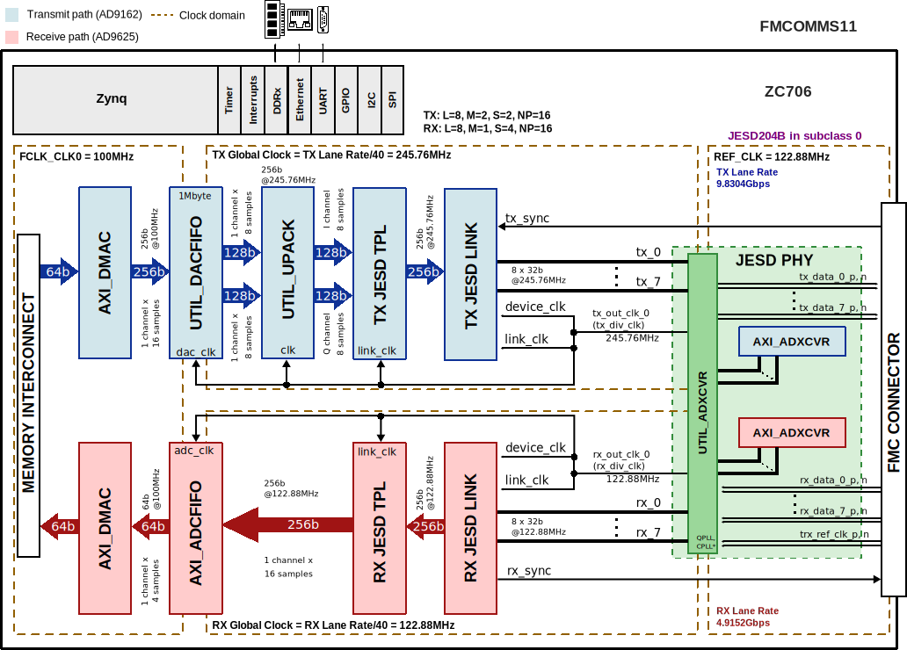

FMCOMMS11 HDL project
Overview
The HDL reference design is an embedded system built around a processor core either ARM, NIOS-II or Microblaze. The high speed digital interface of the converters is handled by the JESD204B framework. Due to the system’s memory interface bandwidth limitation, there are intermediary buffers in the both TX and RX data paths, in order to save and push data using high data rates. In case of the ZC706 carrier board, the RX buffer depth is 1Gbyte, and TX buffer depth is 1Mbyte. This depths can be swapped if required.
By default, the AD9162 is configured in complex mode with 8 lanes (see Table 16 in data sheet), and the AD9625 is configured in generic operation mode with 8 lanes (see Table 16 in data sheet). Both JESD204 interfaces run in Subclass 0.
Other configurations can be used too, but the user needs to make sure that all the parties (clock chip, converters and FPGA JESD204 IPs) of the interface are reconfigured accordingly.
Supported boards
Supported devices
Supported carriers
ZC706 on FMC HPC
Block design
The data path consists of the shared transceivers, then are followed by the individual JESD204B link and transport layer IP cores. The cores are programmable through an AXI-lite interface. Both JESD204 interfaces run in subclass 0.
The digital interface consists of 8 transmit and 8 receive lanes running at 9.8304Gbps and 4.9152Gbps respectively, by default. The transceivers interface the DAC/ADC cores at 256bits @ 245.76MHz and 256bits @ 122.88MHz respectively. The data is sent or received based on the configuration of separate transmit and receive chains.
Block diagram
The data path and clock domains are depicted in the below diagram:
{kind=link}
Block name |
IP name |
Documentation |
Additional info |
|---|---|---|---|
AXI_ADXCVR |
2 instances, one for Rx and one for Tx |
||
AXI_DMAC |
2 instances, one for Rx and one for Tx |
||
DATA_OFFLOAD |
2 instances, one for Rx and one for Tx |
||
RX JESD LINK |
axi_ad9625_jesd |
Instantiaded by |
|
RX JESD TPL |
axi_ad9625_core |
Instantiated by |
|
TX JESD LINK |
axi_ad9162_jesd |
Instantiaded by |
|
TX JESD TPL |
axi_ad9162_core |
Instantiated by |
|
UTIL_UPACK |
— |
Clock scheme
By default, the board comes with the solders set to internal clock references.
The on-board clock reference is provided by a 122.88MHz local oscillator.
To use external clock references, take a look at the section JP location and control from below, where you have a table explaining the connections.
Several GPO and GPIO pins are brought to the RF card through connector J2, found on the bottom of the PCB. These pins allow configuration of the PA, LNA and SPDT switch found on the PCB.
The schematic of the board can be found here.
The settings A, COM and B refer to solder positions: 1, 2, and 3 respectively.
Location |
Device Controlled |
Settings |
Action |
|---|---|---|---|
JP1 |
+ Differential Clock Reference for ADF4355 |
A and COM |
Internal Clock Reference (default) |
+ Differential Clock Reference for ADF4355 |
B and COM |
External Clock Reference |
|
JP2 |
- Differential Clock Reference for ADF4355 |
A and COM |
Internal Clock Reference (default) |
- Differential Clock Reference for ADF4355 |
B and COM |
External Clock Reference |
|
JP22 |
+ Differential Clock Reference for DAC |
A and COM |
ADF4355 Clock Reference (default) |
+ Differential Clock Reference for DAC |
B and COM |
External Clock Reference |
|
JP5 |
- Differential Clock Reference for DAC |
A and COM |
ADF4355 Clock Reference (default) |
- Differential Clock Reference for DAC |
B and COM |
External Clock Reference |
|
JP3 |
+ Differential Clock Reference for ADC |
A and COM |
External Clock Reference |
+ Differential Clock Reference for ADC |
B and COM |
HMC361 Clock Reference (default) |
|
JP4 |
- Differential Clock Reference for ADC |
A and COM |
External Clock Reference |
- Differential Clock Reference for ADC |
B and COM |
HMC361 Clock Reference (default) |
Configuration modes
The current HDL project supports only the following configuration:
JESD204B interfaces in subclass 0
Rx/Tx number of lanes (L): 8
Rx number of converters per device (M): 1
Tx number of converters per device (M): 2
Rx number of samples per frame (S): 4
Tx number of samples per frame (S): 2
Rx/Tx sample width (N, NP): 16
Tx number of samples per channel: \(= \frac{L * 32}{M * N}\)
Caution
In case you have a rev. A FMCOMMS11, the system will work only if you use the rev. A device tree and the old HDL project (prior to adding the Data Offload).
In case you have a rev. B FMCOMMS11, the system will work only if you do a hardware rework: solder a wire between TP19 and C89.
Detailed description
The design has one JESD204B receive chain and one transmit chain, each with 8 lanes.
Each chain consists of a transport layer represented by a JESD TPL module, a link layer represented by a JESD LINK module, and a shared among chains physical layer, represented by an XCVR module. The HDL project in its current state, has the link operating in subclass 0.
Rx device clock - 122.88 MHz
Tx device clock - 245.76 MHz
JESD204B Rx Lane Rate - 4.9152 Gbps
JESD204B Tx Lane Rate - 9.8304 Gbps
The entry point for project creation is system_project.tcl. Some support scripts are first loaded, then the project is created. Based on the suffix of the project, the carrier board is automatically detected. The constraint files and custom modules instantiated directly in the system_top module must be added to the project files list.
These will be explained further on an example, FMCOMMS11 on ZC706 FPGA carrier.
source ../../scripts/adi_env.tcl
source $ad_hdl_dir/projects/scripts/adi_project.tcl
source $ad_hdl_dir/projects/scripts/adi_board.tcl
adi_project_xilinx fmcomms11_zc706
adi_project_files fmcomms11_zc706 [list \
"../common/fmcomms11_spi.v" \
"system_top.v" \
"system_constr.xdc"\
"$ad_hdl_dir/library/xilinx/common/ad_iobuf.v" \
"$ad_hdl_dir/projects/common/zc706/zc706_plddr3_constr.xdc" \
"$ad_hdl_dir/projects/common/zc706/zc706_system_constr.xdc" ]
adi_project_run fmcomms11_zc706
When the project is created, system_bd.tcl is sourced. system_bd.tcl will generate the IP Integrator system. The resulting system will be instantiated in the system_top module.
The first step is to instantiate the ZC706 base design:
source $ad_hdl_dir/projects/common/zc706/zc706_system_bd.tcl
To use the PL DDR3 Data Offload FIFO, the corresponding Tcl file must be sourced:
source $ad_hdl_dir/projects/common/zc706/zc706_plddr3_data_offload_bd.tcl
The following parameters will define the Data Offload’s type, size and the width of the PL DDR Offload. Note, if the FIFO is using the PL side DDR interface, the address width parameter can be ignored, and the FIFO will have an equal depth with the DDR memory. (e.g. in case of the ZC706 board is 1Gbyte).
## Offload attributes
set adc_offload_type 1 ; ## PL_DDR
set adc_offload_size [expr 1024*1024*1024] ; ## 1 GB
set dac_offload_type 0 ; ## BRAM
set dac_offload_size [expr 1*1024*1024] ; ## 1 MB
set plddr_offload_axi_data_width 512
Then the ADC Data Offload instance will be created using the procedure
ad_plddr_data_offload_create.
The next step is to source the FMCOMMS11 specific
design as well as the common support script:
source ../common/fmcomms11_bd.tcl
source $ad_hdl_dir/projects/scripts/adi_pd.tcl
When using the JESD204 Framework, we need to source the
JESD204 support script.
In this script, several procedures which simplify the design are defined:
source $ad_hdl_dir/library/jesd204/scripts/jesd204.tcl
The main JESD204 configuration parameters are defined. These parameters are essential and need to respect the device side configuration in order to have a successful link bring up. For this, the data sheet of the devices needs to be checked.
# JESD204 TX parameters
set TX_NUM_OF_LANES 8 ; # L
set TX_NUM_OF_CONVERTERS 2 ; # M
set TX_SAMPLES_PER_FRAME 2 ; # S
set TX_SAMPLE_WIDTH 16 ; # N/NP
set TX_SAMPLES_PER_CHANNEL [expr [expr $TX_NUM_OF_LANES * 32 ] / \
[expr $TX_NUM_OF_CONVERTERS * $TX_SAMPLE_WIDTH]] ; # L * 32 / (M * N)
# JESD204 RX parameters
set RX_NUM_OF_LANES 8 ; # L
set RX_NUM_OF_CONVERTERS 1 ; # M
set RX_SAMPLES_PER_FRAME 4 ; # S
set RX_SAMPLE_WIDTH 16 ; # N/NP
For a complete system, we use additional modules to transfer data. The transport layer transfers data continuously from/to the ADC/DAC. In the TX data path, UPACK will only send the enabled channels to the transport layer.
Data offload FIFOs are inserted between the transport layers and the DMAs to handle the devices’ higher data rate in the newer version of the project, replacing the obsolete util_dacfifo /util_adcfifo.
ADC Data Offload characteristics:
Type: PL DDR
Size: 1GB
DAC Data Offload characteristics:
Type: BRAM
Size: 1MB
But before instantiating them, first we need to source the script that contains the procedures used on the Data Offload instances:
source $ad_hdl_dir/projects/common/xilinx/data_offload_bd.tcl
When a FIFO is used, the DMA connection to the DDR can run at a lower speed, as data capture cannot be done continuously.
The physical layer is responsible for instantiating and configuring the high-speed serial transceivers in the FPGA. The physical layer is implemented with the use of two modules: AXI ADXCVR and UTIL_ADXCVR core for AMD Xilinx devices.
AXI ADXCVR provides an AXI interface for performing DRP reads and writes to the transceivers, allowing for dynamic reconfiguration.
Given that the hardware implements 8 data lines, that’s how we’ll configure the NUM_OF_LANES parameter. QPLL_ENABLE parameter gives control to this IP of the QPLL reconfiguration for the Transceiver QUAD. If the QUAD is shared with other RX IPs (as it is in this design), the second AXI ADXCVR IP will need to have QPLL_ENABLE set to 0.
Tip
The actual transceiver blocks are instantiated in UTIL_ADXCVR.
These can be found instantiated in projects/fmcomms11/common/fmcomms11_bd.tcl.
Note
AMD Xilinx JESD204 PHY IP can be used as an alternative to implementing the physical layer, as it’s part of Vivado without additional licensing. We currently don’t provide software support for the AMD Xilinx IP. The drawback when using the Xilinx IP is that it doesn’t provide Eyescan functionality.
Clocking
Reference clocks are needed to be feed to the QPLL/CPLL. In this design, we are using a shared reference clock for both receive and transmit channels. What is important to note is that the reference clocks for the transceiver QUAD must be connected to the MGTREFCLK pins either for the QUAD or an adjacent QUAD.
create_bd_port -dir I tx_ref_clk_0
create_bd_port -dir I rx_ref_clk_0
ad_xcvrpll tx_ref_clk_0 util_fmcomms11_xcvr/qpll_ref_clk_*
ad_xcvrpll rx_ref_clk_0 util_fmcomms11_xcvr/cpll_ref_clk_*
ad_xcvrpll axi_ad9162_xcvr/up_pll_rst util_fmcomms11_xcvr/up_qpll_rst_*
ad_xcvrpll axi_ad9625_xcvr/up_pll_rst util_fmcomms11_xcvr/up_cpll_rst_*
The below instructions assign an HP port to all AXI masters, through an interconnect. If there is a single master per interconnect, it will be bypassed in the interconnect. The HP3 connections allow the physical layer to transmit eyescan data to memory, without software interference.
# gt uses hp3, and 100MHz clock for both DRP and AXI4
ad_mem_hp3_interconnect sys_cpu_clk sys_ps7/S_AXI_HP3
ad_mem_hp3_interconnect sys_cpu_clk axi_ad9625_xcvr/m_axi
# interconnect (mem/dac)
ad_mem_hp1_interconnect sys_cpu_clk sys_ps7/S_AXI_HP1
ad_mem_hp1_interconnect sys_cpu_clk axi_ad9162_dma/m_src_axi
ad_mem_hp2_interconnect sys_cpu_clk sys_ps7/S_AXI_HP2
ad_mem_hp2_interconnect sys_cpu_clk axi_ad9625_dma/m_dest_axi
The JESD204 data link layer is instantiated in the next lines, for both TX and RX type of peripheral paths. The Analog Devices JESD204 IPimplements the data link layer, supporting subclass 0 and run time reconfiguration through an AXI memory-mapped interface.
adi_axi_jesd204_tx_create axi_ad9162_jesd 8
adi_axi_jesd204_rx_create axi_ad9625_jesd 8
The IP is equivalent with the AMD Xilinx licensed JESD204 IP.
To relax the constraints for PCB design, the n-th physical lane it’s not connected to the n-th logical lane, therefore there is a remapping scheme between the physical and link layer to reorder the data streams. In this case, both ADC and DAC sides are using the same remapping scheme. With the following remapping scheme: {0 1 2 3 7 4 6 5}, where the n-th logical lane is mapped to the list[n] physical lane.
ad_xcvrcon util_fmcomms11_xcvr axi_ad9162_xcvr axi_ad9162_jesd {0 1 2 3 7 4 6 5}
ad_xcvrcon util_fmcomms11_xcvr axi_ad9625_xcvr axi_ad9625_jesd {0 1 2 3 7 4 6 5}
The transport layer is instantiated in the next lines, for both TX and RX. The TPL peripherals are responsible for converter specific data framing and de-framing and provide a generic FIFO interface to the rest of the system.
ad_xcvrcon util_fmcomms11_xcvr axi_ad9162_xcvr axi_ad9162_jesd
ad_xcvrcon util_fmcomms11_xcvr axi_ad9625_xcvr axi_ad9625_jesd
The reference clock that is used for the transceivers (trx_ref_clk), must be captured by an IBUFDS_GTE2 block. Because UTIL_ADXCVR doesn’t have the buffer instantiated, the best place to instantiate it is in system_top.v.
CPU/Memory interconnects addresses
The addresses are dependent on the architecture of the FPGA, having an offset added to the base address from HDL (see more at CPU/Memory interconnects addresses).
Instance |
Zynq/Microblaze |
|---|---|
axi_ad9162_xcvr |
0x44A6_0000 |
axi_ad9162_core |
0x44A0_0000 |
axi_ad9162_jesd |
0x44A9_0000 |
axi_ad9162_dma |
0x7C42_0000 |
ad9162_data_offload |
0x7C43_0000 |
axi_ad9625_xcvr |
0x44A5_0000 |
axi_ad9625_core |
0x44A1_0000 |
axi_ad9625_jesd |
0x44AA_0000 |
axi_ad9625_dma |
0x7C40_0000 |
ad9625_data_offload |
0x7C41_0000 |
SPI connections
SPI type |
SPI manager instance |
SPI subordinate |
CS |
|---|---|---|---|
PS |
SPI 0 |
AD9625 |
1 |
PS |
SPI 0 |
AD9162 |
2 |
PS |
SPI 0 |
AD9508 |
3 |
PS |
SPI 0 |
ADL5240 |
4 |
PS |
SPI 0 |
ADF4355 |
5 |
PS |
SPI 0 |
HMC1119 |
6 |
The AD9508 chip select will be used only in the rev. A of the FMCOMMS11.
GPIOs
GPIO signal |
Direction |
HDL GPIO EMIO |
Software GPIO |
Software GPIO |
|---|---|---|---|---|
(from FPGA view) |
Zynq-7000 |
Zynq MP |
||
adf4355_muxout |
INOUT |
35 |
89 |
113 |
ad9162_txen |
INOUT |
34 |
88 |
112 |
ad9625_irq |
INOUT |
33 |
87 |
111 |
ad9162_irq |
INOUT |
32 |
86 |
110 |
Interrupts
Below are the Programmable Logic interrupts used in this project.
Instance name |
HDL |
Linux Zynq |
Actual Zynq |
|---|---|---|---|
axi_ad9625_dma |
13 |
57 |
89 |
axi_ad9162_dma |
12 |
56 |
88 |
axi_ad9625_jesd |
11 |
55 |
87 |
axi_ad9162_jesd |
10 |
54 |
86 |
Building the HDL project
The design is built upon ADI’s generic HDL reference design framework. ADI distributes the bit/elf files of these projects as part of the ADI Kuiper Linux. If you want to build the sources, ADI makes them available on the HDL repository. To get the source you must clone the HDL repository.
Linux/Cygwin/WSL
~$
cd hdl/projects/fmcomms11/zcu102
~/hdl/projects/fmcomms11/zcu102$
make
A more comprehensive build guide can be found in the Build an HDL project user guide.
Resources
More information
Support
Analog Devices, Inc. will provide limited online support for anyone using the reference design with ADI components via the EngineerZone FPGA reference designs forum.
For questions regarding the ADI Linux device drivers, device trees, etc. from our Linux GitHub repository, the team will offer support on the EngineerZone Linux software drivers forum.
For questions concerning the ADI No-OS drivers, from our No-OS GitHub repository, the team will offer support on the EngineerZone microcontroller No-OS drivers forum.
It should be noted, that the older the tools’ versions and release branches are, the lower the chances to receive support from ADI engineers.